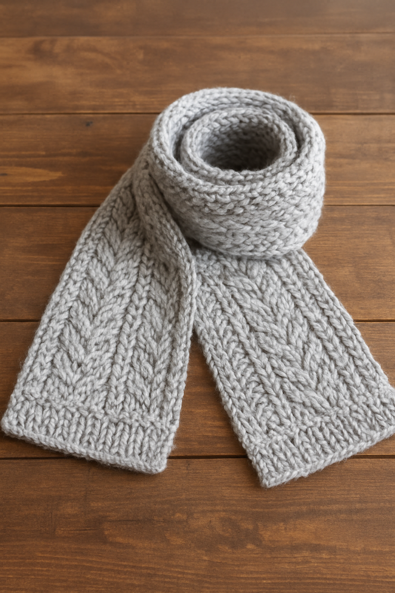
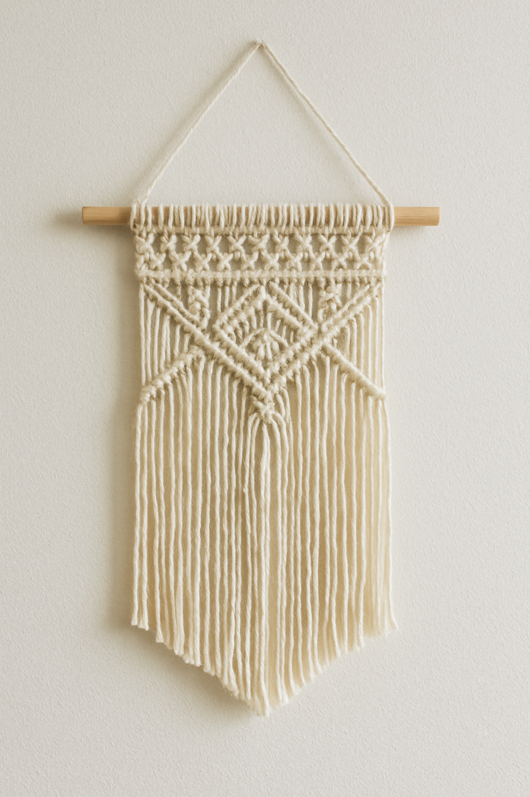
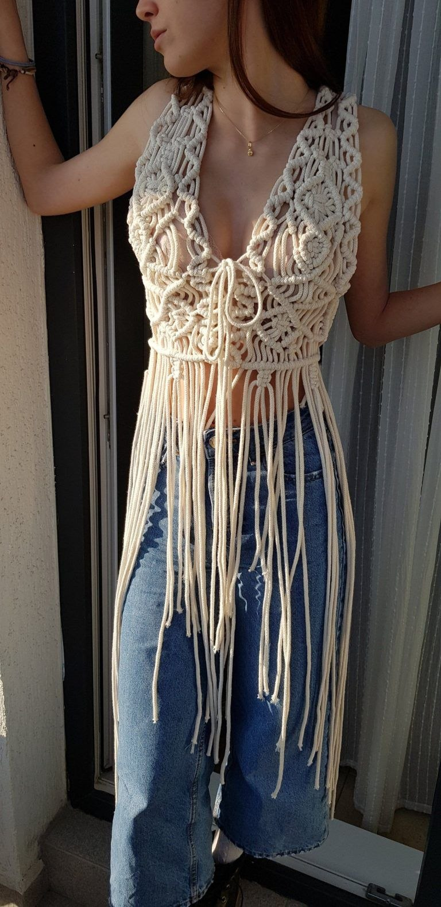

Cynthia C Bookout
Knitting, Crochet & Macramé Instructor
I am a passionate instructor specializing in hand knitting, crochet, and macramé design with over 10+ years of teaching experience. I help women and craft lovers master textile techniques, create beautiful handmade products, and turn their hobbies into profitable skills. My classes include individual mentorship, online video lessons, and group workshops.
Examples of my work




What I offer
- 🎓 Individual and group lessons (online/offline)
- 🧶 Beginner to advanced knitting techniques
- 🪢 Macramé wall decor & modern design lessons
- 🧵 Step-by-step video guides & patterns
- 💻 Remote classes via Zoom / Skype
Get in Touch
If you're interested in learning crafting techniques or scheduling a mentorship session, feel free to contact me anytime.
Contact Me